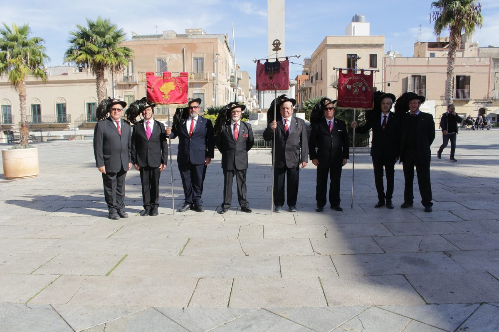
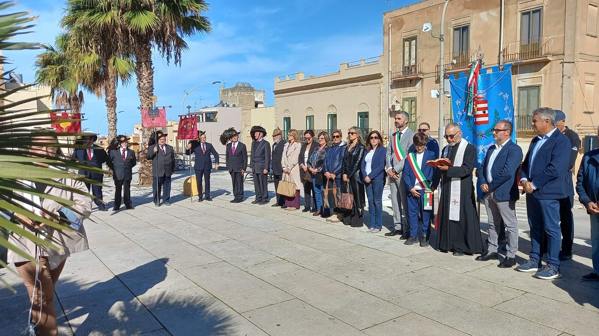

Oggi, 4 novembre, nella suggestiva cornice di Piazza Vittorio Emanuele a Paceco, l'Associazione Nazionale Bersaglieri, con le Sezioni di Trapani e Paceco, ha preso parte alle celebrazioni della Giornata dell'Unità Nazionale e delle Forze Armate, collaborando con le istituzioni locali alla realizzazione di questo importante momento di commemorazione e partecipazione civile.

Una ricorrenza dal profondo significato storico e civile, che rappresenta un'occasione per rendere omaggio a tutti coloro che hanno sacrificato la propria vita per la Patria e per ricordare il valore, il coraggio e il senso del dovere di quanti hanno servito e continuano a servire l'Italia.
La partecipazione congiunta delle due Sezioni bersaglieresche ha voluto testimoniare ancora una volta il forte legame dell'Associazione con il territorio, con le istituzioni e con la comunità, nel segno dei valori di fratellanza, solidarietà, servizio e amore per la Patria.
La cerimonia, alla presenza delle autorità civili, religiose e dei rappresentanti delle istituzioni, ha rappresentato un significativo momento di raccoglimento e condivisione, nel quale il ricordo dei Caduti si è unito alla riconoscenza verso le Forze Armate e verso tutti coloro che quotidianamente operano al servizio della Nazione.

La collaborazione tra le Sezioni di Trapani e Paceco ha rappresentato un significativo esempio di unità associativa, confermando come lo spirito bersaglieresco continui a essere un punto di riferimento per mantenere vive le tradizioni, custodire la memoria storica e trasmettere alle nuove generazioni i valori che contraddistinguono il nostro Corpo.
Il 4 Novembre non è soltanto una ricorrenza da celebrare, ma un'occasione per rinnovare il nostro impegno a custodire la memoria dei sacrifici compiuti da tanti italiani e a trasmettere alle generazioni future il significato dell'Unità Nazionale.
L'Associazione Nazionale Bersaglieri – Sezioni di Trapani e Paceco – desidera esprimere il proprio ringraziamento alle istituzioni e a tutti coloro che hanno contribuito alla realizzazione della manifestazione, rinnovando la propria disponibilità a collaborare per la valorizzazione della memoria, delle tradizioni e dei valori della nostra comunità.